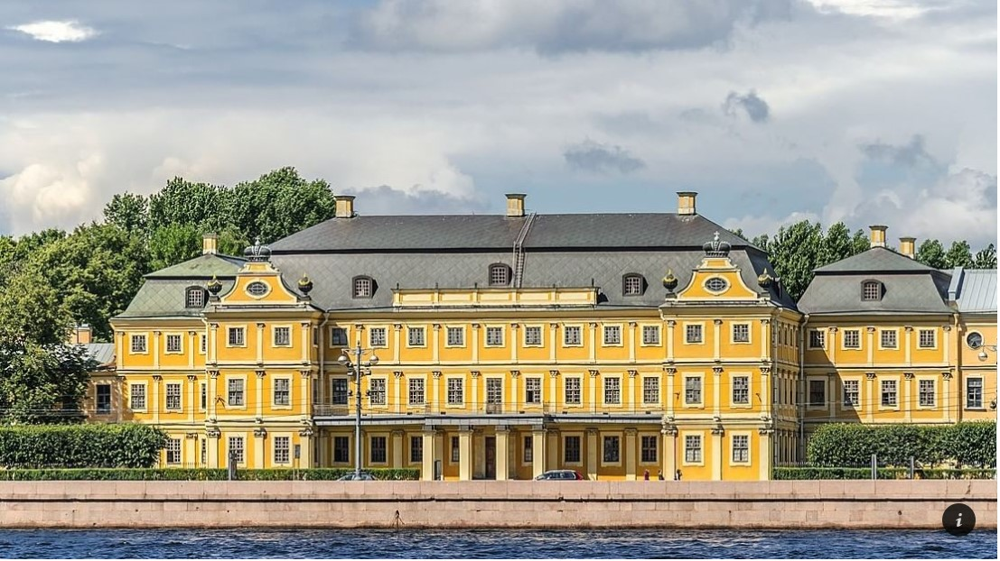
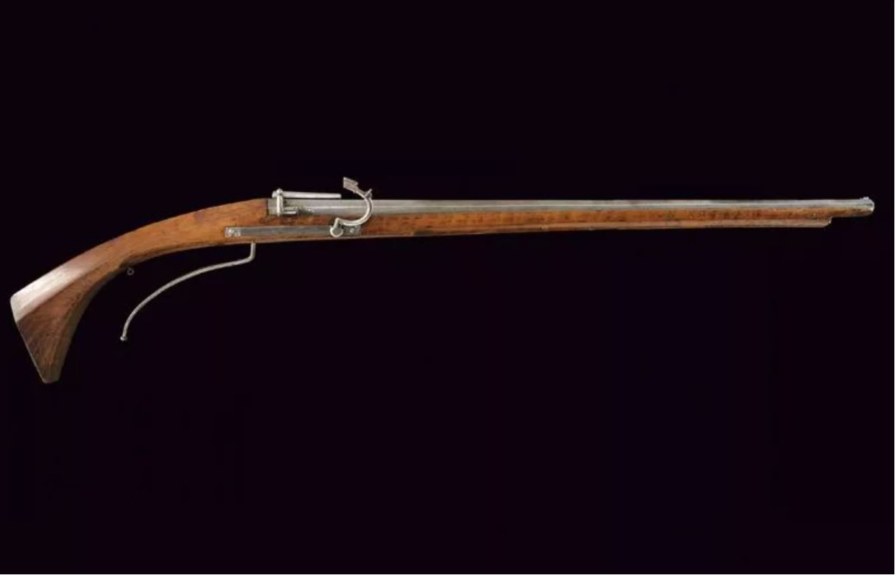
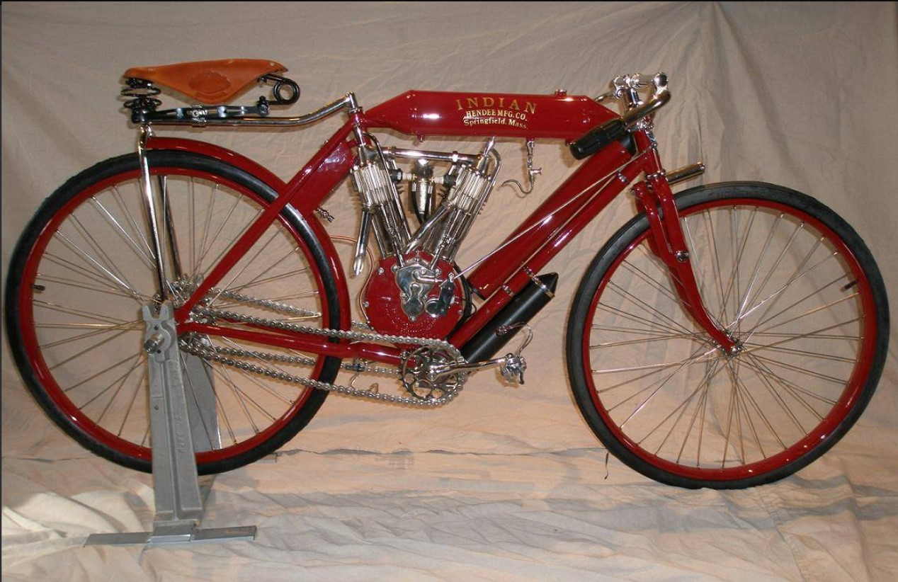
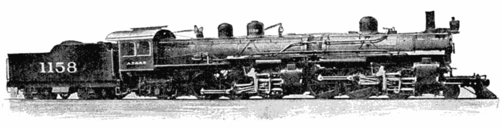

Эпоха петровского барокко

Меншиковский дворец стал первым каменным зданием в новой российской столице. Его строительство длилось четыре года и было завершено к 1714 году. Проект дворца создали архитекторы Джованни Мария Фонтана и Готфрид Иоганн Шедель. Это трехэтажное здание с мансардой долго было одним из самых роскошных в Петербурге. Здесь проводились торжественные обеды царской семьи и даже свадьбы — царевича Алексея с немецкой принцессой Шарлоттой Софией и Анны Иоанновны с Фридрихом Вильгельмом, герцогом Курляндским.
С дворцом связана городская легенда: Александр Меншиков, первый губернатор Санкт-Петербурга, должен был заплатить Петру двести тысяч рублей штрафа. Для того чтобы погасить этот долг, он продал кое-что из обстановки своего дворца. Петр Меншикова пристыдил: «В первый твой приемный день если найду здесь такую же бедность, не соответствующую твоему званию, то заставлю тебя заплатить еще двести тысяч рублей». Меншиков волю царя исполнил, и его дом снова засиял богатым убранством.
История возникновения мушкетов.

В XV веке появились аркебузы – первое ручное огнестрельное оружие, которое начало широко использоваться в ходе военных действий. Его главным достоинством была возможность пробивать даже толстые по тем временам доспехи. Однако латники быстро приспособились к новым условиям. Они стали делать более прочные доспехи, которые аркебуза уже не брала.
Из-за этого возникла потребность в огнестрельном оружии, которое будет способно пробить латы нового образца. Так и появился мушкет. По сравнению с аркебузой он имеет более толстый ствол. Это позволяет зарядить большее количество пороха и, соответственно, сильнее разогнать пулю, придав ей большее ускорение. Кроме того, ствол длиннее. Это также влияет на скорость пули, делает ее больше.
Первым сражением, где произошло применение мушкетов, считается битва при Павии 1521 года. В ней сошлись итальянские войска с одной стороны и немецкие и французские с другой. В битве впервые в истории пехота массово применила огнестрельное оружие и тем самым существенно повлияла на ход боя. Применялись как раз мушкеты.
Со времен битвы при Павии мушкет претерпел небольшие изменения. Он стал более легким и чуть менее мощным. Это было необходимо, чтобы пехота с легкостью переносила оружие. Именно в таком виде мушкеты и существовали вплоть до середины XVII века, когда началась их постепенная замена ружьями.
История американских мотоциклов Indian

Исторически у человечества возникла необходимость преодолевать значительные расстояния в кратчайшие сроки. Возможностей животных уже не хватало, потому люди серьёзно взялись за поиск решений, которые могли бы удовлетворить их запросы. Мотоциклы марки Indian стали одними из первых транспортных средств, подаривших человечеству возможность передвигаться быстро и красиво. Совершенству, как говорится, нет пределов, потому этот поиск не прекращается и по сей день. Но давайте узнаем, как же это всё начиналось?
В 1818 году немецкий профессор барон Карл фон Дрез из Карлсруэ запатентовал первый двухколёсный самокат – двухколёсный прототип велосипеда с рулём и деревянной рамой.
67 лет спустя – в 1885 году – немцы Даймлер и Майбах создали первый мотоцикл Reitwagen на основе двигателя внутреннего сгорания. Reitwagen существенно отличался от знакомого нам мотоцикла – рама и колёса были деревянными, а весил он 90 кг. Такой необычный транспорт с внешностью велосипеда стал настоящими прорывом – при мощности двигателя в 0,5 л. с. он развивал скорость до 12 км/ч, чем привлёк внимание широкой публики.
Сегодня мотоциклы – это больше, чем просто транспорт, и особую роль в формирования современного облика железного коня сыграли США. Американские мотоциклы действительно достойны восхищения – именно они популяризировали байкерскую культуру во всём мире.
История самолетов, кто создал.

Первые исторические упоминания о летательных аппаратах были еще в древнеиндийской литературе. В ней описаны гипотетические летательные машины – виманы. В фольклоре практически всех народов существует упоминание о летательных аппаратах, таких как ковер-самолет или ступа, в которой летала Баба Яга.
Первым испытателем, который предложил полноценную концепцию летательного агрегата с отдельным двигателем и фиксированным крылом, стал англичанин Джордж Кейли. Его труды датируются концом XVIII века.
Подробнее на: https://avia.pro/blog/kto-sozdal-samolet
История поровозов.

Прототип паровоза был построен во Франции в 1769 военным инженером Николя-Жозе Кюньо. Второй вариант был построен и испытан в конце 1770 года, но в декабре того же года изобретатель и заказчик были отправлены в ссылку как сторонники оппозиции. Эти разработки предназначались для транспортировки тяжёлых военных грузов пушек и представляли собой скорее паровой автомобиль.
Первый рельсовый паровой локомотив был построен в 1804 году Ричардом Тревитиком. Однако железо в те годы было слишком дорого, а чугунные рельсы не могли выдерживать тяжелую машину.
В последующие годы многие инженеры пытались создавать паровозы, но самым удачливым из них оказался Джордж Стефенсон, который в 1812—1829 гг. не только предложил несколько удачных конструкций паровозов, но и сумел убедить шахтовладельцев построить первую железную дорогу из Дарлингтона к Стоктону, способную выдержать паровоз. Позднее, паровоз Стефенсона «Ракета» выиграл специально устроенное соревнование и стал основным локомотивом одной из первых общественных дорог Манчестер—Ливерпуль.
Паровоз B выпущенный в 1856 году
Создание железнодорожной сети привело к взрывному росту промышленности с середины XIX века, особенно металлургической. Во многом, именно изобретение паровоза дало толчок к созданию того мира, в котором мы сейчас живем.
Одним из ярких примеров паровозной техники явилась Кукушка паровоз, узкоколейный паровоз, заступивший на службу ещё до революции и трудившийся на узкоколейных магистралях до 70-х годов прошлого века. Особенное развитие узкоколейные паровозы получили на Белорецкой узкоколейной железной дороге. Именно здесь впервые была применена автосцепка и другие новшества.